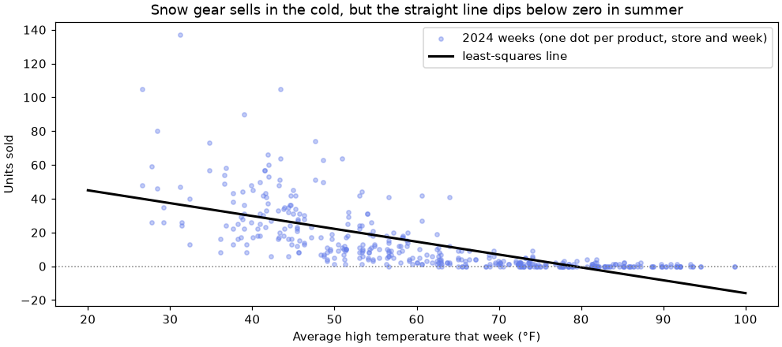
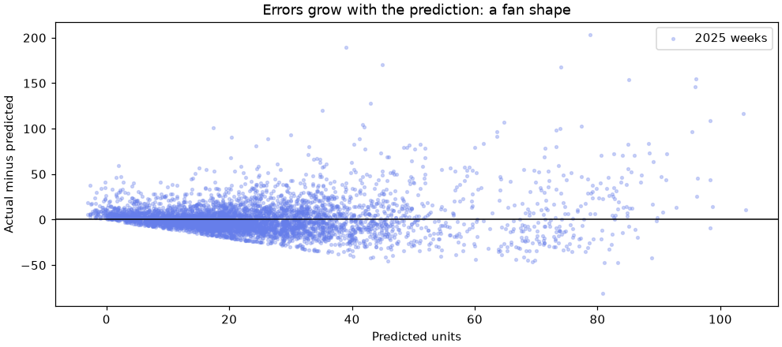
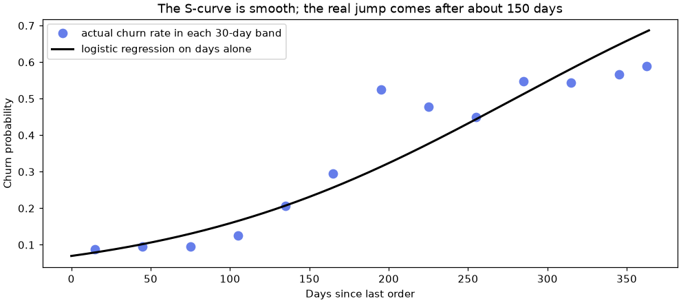

📈 Lesson 3.1: Linear and Logistic Regression
Open up the two models that sit underneath half of applied machine learning: a straight line that predicts a number, and the same line bent into a probability.
🎯 Learning Objectives
By the end of this lesson, you will be able to:
- Explain what least squares does and fit
LinearRegression, readingcoef_andintercept_in the units of the data - Interpret a coefficient in a multiple regression as an effect "holding the other features constant", and spot when that reading breaks down
- Use a log target with
TransformedTargetRegressorwhen errors grow with the size of the prediction - Describe how logistic regression turns a weighted sum into a probability, and read its coefficients as log-odds and odds ratios
- Fit a multiclass logistic regression and know which settings are current (
C,l1_ratio) and which are gone
In This Lesson
📏 Drawing the Best Line
You have already used LogisticRegression as a black box since Lesson 1.1, and met LinearRegression in an exercise. This lesson opens both boxes. They are worth understanding in detail for three reasons: they are fast and hard to break, their coefficients can be read by people, and they are the baseline every fancier model must beat. Neural networks (Module 10) are, at heart, many logistic regressions stacked together.
💡 Mental Model: The Ruler on the Scatter Plot
Plot weekly snowshoe sales against temperature and you see a cloud of dots drifting downward. Lay a ruler across the cloud. You can tilt it and slide it up and down. For any position of the ruler, each dot sits some vertical distance above or below it: that gap is the dot's residual, the error the ruler makes for that week. Linear regression finds the one position where the squared residuals, added up over every dot, are as small as possible. That rule is called least squares.
With one feature, the ruler is the line ŷ = b₀ + b₁·x. The slope b₁ says how much the prediction changes for one more unit of x; the intercept b₀ is the prediction when x is 0. With many features, the idea is identical, only with one slope per feature:
ŷ = b₀ + b₁·x₁ + b₂·x₂ + … + bₖ·xₖ
Why squares, and not plain distances? Squaring makes every error positive, punishes one big miss more than several small ones, and, usefully, gives a formula with an exact answer, so the fit is instant and always the same. scikit-learn stores the slopes in coef_ and the intercept in intercept_: learned during fit, hence the trailing underscores.
❄️ One Feature: Snow Gear and Temperature
Pinecrest sells two snow products (snowshoes and goggles) in four stores. Load the weekly demand table and keep the Snow rows. The table covers 2024 and 2025, so train on 2024 and test on 2025: this is a forecasting problem, and the future must not leak into the past (Lesson 1.2).
import numpy as np
import pandas as pd
from sklearn.linear_model import LinearRegression
from sklearn.metrics import mean_absolute_error
demand = pd.read_csv("data/weekly_demand.csv")
train, test = demand[demand["year"] == 2024], demand[demand["year"] == 2025]
snow_train = train[train["category"] == "Snow"]
snow_test = test[test["category"] == "Snow"]
line = LinearRegression()
line.fit(snow_train[["avg_high_temp_f"]], snow_train["units_sold"])
print(f"slope {line.coef_[0]:.3f} units per °F, intercept {line.intercept_:.2f}")
print(f"test R2 {line.score(snow_test[['avg_high_temp_f']], snow_test['units_sold']):.3f}")
print(f"test MAE {mean_absolute_error(snow_test['units_sold'], line.predict(snow_test[['avg_high_temp_f']])):.2f} units")Output
slope -0.761 units per °F, intercept 60.18
test R2 0.492
test MAE 8.64 unitsRead the coefficients in the data's own units. Each extra degree Fahrenheit of weekly high temperature goes with about 0.76 fewer snow items sold per product per store. The intercept, 60 units, is the prediction at 0 °F, which never happens in this data: an intercept is often just where the line crosses the axis, not a meaningful number. R² of 0.49 says temperature alone explains about half of the week-to-week variation in 2025.
There is nothing mysterious in fit. For one feature, least squares has a short formula: the slope is the covariance of x and y divided by the variance of x, and the line passes through the point of averages.
x, y = snow_train["avg_high_temp_f"], snow_train["units_sold"]
slope = np.cov(x, y)[0, 1] / x.var()
intercept = y.mean() - slope * x.mean()
print(f"by hand: slope {slope:.3f}, intercept {intercept:.2f}")Output
by hand: slope -0.761, intercept 60.18The same numbers. With many features, scikit-learn solves the matrix version of this formula. Now look at the fit, and at where the line goes:
import matplotlib.pyplot as plt
grid = pd.DataFrame({"avg_high_temp_f": np.linspace(20, 100, 50)})
fig, ax = plt.subplots(figsize=(9, 4), layout="constrained")
ax.scatter(snow_train["avg_high_temp_f"], snow_train["units_sold"], s=12, alpha=0.4,
color="#667eea", label="2024 weeks (one dot per product, store and week)")
ax.plot(grid["avg_high_temp_f"], line.predict(grid), color="black", linewidth=2, label="least-squares line")
ax.axhline(0, color="gray", linewidth=1, linestyle=":")
ax.set_xlabel("Average high temperature that week (°F)")
ax.set_ylabel("Units sold")
ax.set_title("Snow gear sells in the cold, but the straight line dips below zero in summer")
ax.legend()
plt.show()
print(line.predict(pd.DataFrame({"avg_high_temp_f": [30, 60, 85]})).round(1))Output
[37.4 14.5 -4.5]
At 85 °F the model predicts minus 4.5 units. A straight line has no idea that sales cannot go below zero; it simply continues. Two lessons in one picture: a linear model is only as good as the straight-line assumption, and predictions outside the range where the pattern holds (here, hot weeks for a winter product) can be nonsense. The log target later in this lesson fixes the negative predictions; trees and feature engineering handle curves in later lessons.
🧮 Many Features at Once
Now predict units for all 24 products. A product's identity matters most (socks outsell tents week after week), so one-hot encode product_id and store as in Lesson 2.1, and add three numeric features. Everything goes in a pipeline (Lesson 2.2). First, two baselines: predict the 2024 average for everything, and predict each product's own 2024 average.
from sklearn.compose import ColumnTransformer
from sklearn.preprocessing import OneHotEncoder
from sklearn.pipeline import make_pipeline
y_train, y_test = train["units_sold"], test["units_sold"]
mean_mae = mean_absolute_error(y_test, np.full(len(y_test), y_train.mean()))
product_means = train.groupby("product_id")["units_sold"].mean()
product_mae = mean_absolute_error(y_test, test["product_id"].map(product_means))
print(f"baseline, overall mean : MAE {mean_mae:.2f}")
print(f"baseline, product's mean : MAE {product_mae:.2f}")
num_cols = ["promo", "holiday_week", "avg_high_temp_f"]
cat_cols = ["product_id", "store"]
encode = ColumnTransformer(
[("num", "passthrough", num_cols),
("cat", OneHotEncoder(handle_unknown="ignore", sparse_output=False), cat_cols)]
).set_output(transform="pandas")
linear = make_pipeline(encode, LinearRegression())
linear.fit(train[num_cols + cat_cols], y_train)
pred = linear.predict(test[num_cols + cat_cols])
print(f"linear regression : MAE {mean_absolute_error(y_test, pred):.2f}, "
f"R2 {linear.score(test[num_cols + cat_cols], y_test):.3f}")
coefs = pd.Series(linear[-1].coef_, index=linear[-1].feature_names_in_)
print(coefs[["num__promo", "num__holiday_week", "num__avg_high_temp_f"]].round(3))Output
baseline, overall mean : MAE 17.13
baseline, product's mean : MAE 13.42
linear regression : MAE 11.77, R2 0.506
num__promo 14.003
num__holiday_week 13.997
num__avg_high_temp_f 0.191
dtype: float64The model beats both baselines: 11.8 units of average error against 13.4 for "each product's average" and 17.1 for "the overall average". The numeric coefficients read naturally: a promotion week sells about 14 more units, a holiday week about 14 more, and each degree of temperature adds 0.19 units, all holding the other features constant. That phrase is the heart of multiple regression. The promo coefficient compares a promo week with a non-promo week for the same product, in the same store, at the same temperature, because those are all in the model.
⚠️ One Slope for Everyone
The temperature coefficient is a single number, +0.19 units per °F, for every product. But you just saw snow gear lose 0.76 units per degree, while tents sell more in warm weather. The model has averaged opposite effects into one slope that fits nobody well. A linear model gives each feature one slope unless you build features that let the slope differ (an interaction such as "temperature × is-snow-product", Lesson 3.2) or switch to a model that finds such interactions itself (trees, Module 5).
📐 When Errors Fan Out: a Log Target
Least squares quietly assumes that the size of the errors does not depend on the size of the prediction. Check that with a residual plot: residual (actual minus predicted) against the prediction.
residuals = y_test - pred
fig, ax = plt.subplots(figsize=(9, 4), layout="constrained")
ax.scatter(pred, residuals, s=6, alpha=0.3, color="#667eea", label="2025 weeks")
ax.axhline(0, color="black", linewidth=1)
ax.set_xlabel("Predicted units")
ax.set_ylabel("Actual minus predicted")
ax.set_title("Errors grow with the prediction: a fan shape")
ax.legend()
plt.show()
print(f"negative predictions: {(pred < 0).sum()} of {len(pred)}")Output
negative predictions: 59 of 4896
The fan says that demand behaves multiplicatively: a promotion raises sales by a percentage of what a product normally sells, which might be 3 units for a slow seller and 30 for a fast one. A model that adds a fixed 14 units to everything is wrong for both. The standard fix is to model the logarithm of the target, where multiplying becomes adding. Use np.log1p (log of 1 + y), which handles weeks with zero sales, and np.expm1 to turn predictions back into units. TransformedTargetRegressor does both automatically, so predict still returns units:
from sklearn.compose import TransformedTargetRegressor
log_linear = TransformedTargetRegressor(
regressor=make_pipeline(encode, LinearRegression()),
func=np.log1p,
inverse_func=np.expm1,
)
log_linear.fit(train[num_cols + cat_cols], y_train)
log_pred = log_linear.predict(test[num_cols + cat_cols])
print(f"log-target linear regression: MAE {mean_absolute_error(y_test, log_pred):.2f}")
print(f"negative predictions: {(log_pred < 0).sum()}")
log_coefs = pd.Series(log_linear.regressor_[-1].coef_, index=log_linear.regressor_[-1].feature_names_in_)
effects = log_coefs[["num__promo", "num__holiday_week", "num__avg_high_temp_f"]]
print(pd.DataFrame({"log_coef": effects, "pct_change": (np.exp(effects) - 1) * 100}).round(3))Output
log-target linear regression: MAE 11.16
negative predictions: 0
log_coef pct_change
num__promo 0.420 52.199
num__holiday_week 0.407 50.201
num__avg_high_temp_f 0.005 0.510The error drops and the negative predictions disappear (the exponential of anything is positive). The coefficients now read as percentages: exp(coef) - 1 is the proportional change. A promo week sells about 52% more and a holiday week about 50% more, for every product, whatever its size. That is a far more natural statement for a retailer than "14 extra units of anything".
💡 When to Reach for a Log Target
Use it when the target is positive and skewed (sales, prices, incomes, durations), when effects are naturally "percent" effects, and when the residual plot fans out. It changes what the model optimizes: errors are measured in ratios, so the model cares about being 20% off for a small seller as much as for a big one. Always report the final error back in the original units, as here.
🔀 From a Line to a Probability
For a yes-or-no target such as churned, a straight line is the wrong shape: it would happily predict a "probability" of 1.4 or -0.2. Logistic regression keeps the weighted sum and passes it through a squashing function, the sigmoid, which maps any number to the range 0 to 1:
The weighted sum z has a name: the log-odds. Odds are p / (1 - p) (a 20% chance is odds of 1 to 4, or 0.25), and logistic regression assumes that the logarithm of the odds is a straight-line function of the features. Training does not use least squares; it finds the coefficients that make the observed outcomes most likely (it minimizes log loss, which punishes confident wrong probabilities hard).
Start with one feature, on the same churn split as Lesson 1.1:
from sklearn.model_selection import train_test_split
from sklearn.linear_model import LogisticRegression
customers = pd.read_csv("data/customers_churn.csv")
features = ["tenure_months", "orders_12m", "spend_12m", "avg_order_value", "days_since_last_order",
"returns_12m", "return_rate", "support_tickets_12m", "discount_share", "app_user"]
Xc_train, Xc_test, yc_train, yc_test = train_test_split(
customers[features], customers["churned"], test_size=0.25, stratify=customers["churned"], random_state=42
)
one = LogisticRegression().fit(Xc_train[["days_since_last_order"]], yc_train)
b0, b1 = one.intercept_[0], one.coef_[0, 0]
print(f"z = {b0:.3f} + {b1:.5f} * days")
days = pd.DataFrame({"days_since_last_order": [0, 30, 90, 150, 250, 364]})
days["p_churn"] = one.predict_proba(days)[:, 1].round(3)
days["by_hand"] = (1 / (1 + np.exp(-(b0 + b1 * days["days_since_last_order"])))).round(3)
print(days.to_string(index=False))
print(f"p crosses 0.5 at {-b0 / b1:.0f} days")Output
z = -2.594 + 0.00928 * days
days_since_last_order p_churn by_hand
0 0.070 0.070
30 0.090 0.090
90 0.147 0.147
150 0.231 0.231
250 0.432 0.432
364 0.687 0.687
p crosses 0.5 at 279 daysThe sigmoid formula by hand gives exactly what predict_proba gives. Churn probability rises smoothly with the gap since the last order and crosses 0.5 only at about 279 days, so with this single feature predict calls very few customers churners. Compare the S-curve with what really happened in each 30-day band:
bands = pd.cut(Xc_train["days_since_last_order"], bins=[*range(0, 361, 30), 365], right=False)
actual = yc_train.groupby(bands, observed=True).mean()
band_mid = [interval.mid for interval in actual.index]
grid = pd.DataFrame({"days_since_last_order": np.arange(0, 365)})
fig, ax = plt.subplots(figsize=(9, 4), layout="constrained")
ax.plot(band_mid, actual.to_numpy(), "o", color="#667eea", markersize=8, label="actual churn rate in each 30-day band")
ax.plot(grid["days_since_last_order"], one.predict_proba(grid)[:, 1], color="black", linewidth=2,
label="logistic regression on days alone")
ax.set_xlabel("Days since last order")
ax.set_ylabel("Churn probability")
ax.set_title("The S-curve is smooth; the real jump comes after about 150 days")
ax.legend()
plt.show()
print(actual.round(3).to_string())Output
days_since_last_order
[0, 30) 0.088
[30, 60) 0.095
[60, 90) 0.095
[90, 120) 0.125
[120, 150) 0.207
[150, 180) 0.295
[180, 210) 0.525
[210, 240) 0.477
[240, 270) 0.449
[270, 300) 0.548
[300, 330) 0.543
[330, 360) 0.567
[360, 365) 0.589
The model gets the direction right and is still wrong in a specific, readable way: real churn is flat for months and then jumps, while the logistic curve can only bend gently. This is the "log-odds are a straight line" assumption showing. You can help a linear model by giving it a better feature (for example, a flag for "more than 150 days", Lesson 2.3 style, which Exercise 4 tries), or use a model that finds thresholds itself (a decision tree, Lesson 5.1).
🔎 Reading Logistic Coefficients
Now use all ten Lesson 1.1 features, scaled inside a pipeline so that every coefficient is "per one standard deviation" and comparable. A coefficient is a change in log-odds; np.exp(coef) turns it into an odds ratio, the factor by which the odds of churning are multiplied for a one-standard-deviation increase, holding the other features constant.
from sklearn.preprocessing import StandardScaler
churn_model = make_pipeline(StandardScaler(), LogisticRegression())
churn_model.fit(Xc_train, yc_train)
print(f"test accuracy {churn_model.score(Xc_test, yc_test):.3f}")
coef = pd.Series(churn_model[-1].coef_[0], index=features)
table = pd.DataFrame({"log_odds": coef, "odds_ratio": np.exp(coef)}).sort_values("log_odds")
print(table.round(2))Output
test accuracy 0.848
log_odds odds_ratio
app_user -0.34 0.71
orders_12m -0.31 0.73
tenure_months -0.12 0.88
spend_12m -0.12 0.89
returns_12m -0.02 0.98
avg_order_value 0.00 1.00
return_rate 0.07 1.07
support_tickets_12m 0.40 1.49
discount_share 0.67 1.96
days_since_last_order 0.88 2.42Read the top row of the risk factors: one standard deviation more days since the last order (about 87 days, from churn_model[0].scale_) multiplies the odds of churning by 2.4. One standard deviation more discount reliance multiplies them by about 2. App users have 0.71 times the odds of non-users, about 30% lower. Odds ratios multiply: a customer who is high on both recency and discounts has their odds multiplied twice.
⚠️ What These Coefficients Do Not Say
They describe this model, not causes. Pinecrest cannot make customers churn less by forcing them to install the app; app users may simply be more engaged people. Coefficients also share credit between overlapping features: spend_12m is almost exactly orders times average order value, so the three split one effect between them in a way that can shift with small changes in the data. And a straight-line effect can hide a curve: tenure gets only -0.12 because churn is high for both brand-new and very old customers, and one slope cannot draw a U. Module 7 covers trustworthy explanations.
🔁 Probability, Log-Odds and the 0.5 Cut
A classifier's decision_function returns the raw log-odds z. Positive z means a probability above 0.5, and that is exactly when predict says 1:
z = churn_model.decision_function(Xc_test[:3])
print("log-odds :", z.round(3))
print("sigmoid(z) :", (1 / (1 + np.exp(-z))).round(3))
print("proba :", churn_model.predict_proba(Xc_test[:3])[:, 1].round(3))
print("predict :", churn_model.predict(Xc_test[:3]))Output
log-odds : [-2.691 0.118 -2.145]
sigmoid(z) : [0.063 0.53 0.105]
proba : [0.063 0.53 0.105]
predict : [0 1 0]Same customers as Lesson 1.1, same probabilities (0.063, 0.53, 0.105). Lesson 2.5 showed why you often want a different cut than 0.5; now you can see that moving the threshold is the same as moving the line z = 0.
💡 LogisticRegression Is Regularized by Default
LogisticRegression() quietly adds a penalty that keeps coefficients small, controlled by C (default 1.0; smaller C means a stronger penalty) and l1_ratio (default 0, the "L2" penalty). C=np.inf turns the penalty off. With 4,500 customers and 10 scaled features the penalty barely matters here: switching it off changes no coefficient by more than about 0.004. With many features or few rows it matters a lot, which is the subject of Lesson 3.2. The old penalty= argument is deprecated (see Common Mistakes).
🎨 More Than Two Classes
Logistic regression extends to several classes with the softmax function: the model learns one weighted sum per class, and softmax turns the scores into probabilities that add up to 1. scikit-learn does this automatically when y has more than two classes. As a small example, predict a customer's loyalty tier (Basic, Silver, Gold) from spend and tenure:
tier_X = customers[["spend_12m", "tenure_months"]]
tier_y = customers["loyalty_tier"]
Xt_train, Xt_test, yt_train, yt_test = train_test_split(
tier_X, tier_y, test_size=0.25, stratify=tier_y, random_state=42
)
tier_model = make_pipeline(StandardScaler(), LogisticRegression()).fit(Xt_train, yt_train)
print(tier_model.classes_)
print(tier_model[-1].coef_.shape)
print(f"test accuracy {tier_model.score(Xt_test, yt_test):.3f}")
print(tier_model.predict_proba(Xt_test[:3]).round(3))
print(yt_test[:3].tolist())Output
['Basic' 'Gold' 'Silver']
(3, 2)
test accuracy 0.919
[[1. 0. 0. ]
[0.096 0.001 0.903]
[1. 0. 0. ]]
['Basic', 'Silver', 'Basic']coef_ now has one row per class (3 classes × 2 features), and each row of predict_proba has three probabilities in the order of classes_ (alphabetical: Basic, Gold, Silver), adding up to 1. The accuracy is high because Pinecrest assigns tiers from spend and tenure in the first place: a reminder that a model can only rediscover what is in the data. Older code passes multi_class="multinomial"; that argument has been removed, and multinomial (softmax) is simply what happens.
⚠️ Common Mistakes
Linear models rarely crash. Most of their mistakes are numbers that look fine and mean something else.
1. Logistic Regression on a Number
LogisticRegression().fit(train[["promo"]], train["units_sold"] / 10)Error
ValueError: Unknown label type: continuous. Maybe you are trying to fit a classifier, which expects discrete classes on a regression target with continuous values.What it means: despite its name, logistic regression is a classifier; it needs a target with a few discrete classes. Fix: use LinearRegression (or another regressor) for numbers. (With a whole-number target such as raw units_sold there is no error at all: scikit-learn treats every distinct count as its own class, which is just as wrong and much slower. Check model.classes_ if in doubt.)
2. Old Arguments: multi_class and penalty
LogisticRegression(multi_class="multinomial")Error
TypeError: LogisticRegression.__init__() got an unexpected keyword argument 'multi_class'Code from older tutorials also sets penalty. That still runs, with a warning (in a notebook it appears in a pink box; this code catches it so you can read it):
import warnings
with warnings.catch_warnings(record=True) as caught:
warnings.simplefilter("always")
LogisticRegression(penalty="l2").fit(Xc_train[["days_since_last_order"]], yc_train)
print(caught[0].category.__name__)
print(str(caught[0].message))Output
FutureWarning
'penalty' was deprecated in version 1.8 and will be removed in 1.10. To avoid this warning, leave 'penalty' set to its default value and use 'l1_ratio' or 'C' instead. Use l1_ratio=0 instead of penalty='l2', l1_ratio=1 instead of penalty='l1', l1_ratio set to a float between 0 and 1 instead of penalty='elasticnet', and C=np.inf instead of penalty=None.What it means: scikit-learn simplified the API. Multiclass problems always use softmax, and the penalty is described by C and l1_ratio alone. Fix: delete multi_class; replace penalty="l2" with nothing (it is the default), penalty="l1" with l1_ratio=1 (plus a solver that supports it, Lesson 3.2), and penalty=None with C=np.inf.
3. Comparing Coefficients in Different Units
print(coefs[["num__promo", "num__avg_high_temp_f"]].round(3))
temp_range = train["avg_high_temp_f"].max() - train["avg_high_temp_f"].min()
print(f"temperature range in 2024: {temp_range:.1f} °F, worth {coefs['num__avg_high_temp_f'] * temp_range:.1f} units")Output (no error, and that is the problem)
num__promo 14.003
num__avg_high_temp_f 0.191
dtype: float64
temperature range in 2024: 72.1 °F, worth 13.8 unitsWhat happened: the promo coefficient (about 14) looks 70 times bigger than temperature's (0.19), but promo moves from 0 to 1 while temperature spans about 70 degrees. Across its range, temperature is worth about as much as a promotion. Fix: compare coefficients only when the features are on the same scale (standardize them, as the churn model did), or translate each into "effect across a typical change". Even then, Module 7's permutation importance is the safer way to rank features.
4. Two Columns That Say the Same Thing
twin_cols = ["store_sqft", "promo"]
twins = make_pipeline(
ColumnTransformer([("num", "passthrough", twin_cols),
("cat", OneHotEncoder(sparse_output=False), ["store"])]).set_output(transform="pandas"),
LinearRegression(),
).fit(train[twin_cols + ["store"]], y_train)
no_sqft = make_pipeline(
ColumnTransformer([("num", "passthrough", ["promo"]),
("cat", OneHotEncoder(sparse_output=False), ["store"])]).set_output(transform="pandas"),
LinearRegression(),
).fit(train[["promo", "store"]], y_train)
print(pd.Series(twins[-1].coef_, index=twins[-1].feature_names_in_).round(4))
print(pd.Series(no_sqft[-1].coef_, index=no_sqft[-1].feature_names_in_).round(4))
print("same predictions:", np.allclose(twins.predict(test[twin_cols + ["store"]]),
no_sqft.predict(test[["promo", "store"]])))Output (no error, and that is the problem)
num__store_sqft 0.0013
num__promo 12.6538
cat__store_Asheville -0.3945
cat__store_Bend 0.5186
cat__store_Boise -0.1957
cat__store_Flagstaff 0.0715
dtype: float64
num__promo 12.6538
cat__store_Asheville -4.5557
cat__store_Bend 0.1985
cat__store_Boise 6.5264
cat__store_Flagstaff -2.1692
dtype: float64
same predictions: TrueWhat happened: each store has exactly one floor area, so store_sqft carries no information that the store columns do not already have. This is perfect collinearity: infinitely many sets of coefficients give identical predictions, and LinearRegression silently returns one of them. The store effects shrink from a range of about 11 units (Asheville -4.6 to Boise +6.5) to under 1, and store_sqft picks up the difference with a coefficient that means nothing. The predictions are exactly the same. Fix: drop one of the twins. Near-twins (like spend_12m and orders times average order value) cause a milder version: coefficients that are unstable and hard to read. Lesson 2.4's redundancy checks and Lesson 3.2's regularization both help.
5. Trusting the Line Outside the Data
You met this one already: the Snow line predicts -4.5 units at 85 °F. Nothing warns you; the model will extrapolate a straight line anywhere you ask. Fix: look at a plot of the fit, check predictions at the edges of the realistic range, use a log target (or another model) when the target cannot be negative, and be wary of predictions for feature values far from anything in the training data.
🛠️ Project: What Does a Discount Really Sell?
Pinecrest's merchandising team asks a classic question: "If we cut a price by 10%, how many more units do we sell?" Economists call the answer the price elasticity: the percent change in units for a 1% change in price. A log-log regression estimates it directly, because the coefficient on log(price) in a model of log(units) is the elasticity. The catch is that the answer depends entirely on what else is in the model. Work in a fresh notebook called lesson_3_1_project. Allow about 40 minutes.
🛠️ Step 1: Load and add log columns (5 min)
import numpy as np
import pandas as pd
from sklearn.compose import ColumnTransformer
from sklearn.preprocessing import OneHotEncoder
from sklearn.pipeline import make_pipeline
from sklearn.linear_model import LinearRegression
demand = pd.read_csv("data/weekly_demand.csv", parse_dates=["week_start"])
demand["log_units"] = np.log1p(demand["units_sold"])
demand["log_price"] = np.log(demand["price"])
demand["month"] = demand["week_start"].dt.month.astype(str)
demand["product_store"] = demand["product_id"] + " " + demand["store"]
demand["product_month"] = demand["product_id"] + " " + demand["month"]
demand["trend"] = (demand["week_start"] - demand["week_start"].min()).dt.days / 365.25
print(demand[["product_id", "store", "month", "price", "log_price", "units_sold", "log_units"]].head(3).round(3))Output
product_id store month price log_price units_sold log_units
0 ACC-2001 Asheville 1 42.46 3.749 20 3.045
1 ACC-2002 Asheville 1 101.96 4.625 15 2.773
2 ACC-2003 Asheville 1 39.95 3.688 14 2.708product_store and product_month are crossed categories: one level per product in each store and per product in each calendar month. They let each product have its own store pattern and its own seasonal pattern. trend is years since the first week.
🛠️ Step 2: The naive slope (5 min)
Write one helper that fits log_units on some numeric columns plus some one-hot categories and returns the fitted pipeline. Then fit price alone.
def fit_log_model(num, cat, data):
steps = [("num", "passthrough", num)]
if cat:
steps.append(("cat", OneHotEncoder(handle_unknown="ignore"), cat))
model = make_pipeline(ColumnTransformer(steps), LinearRegression())
return model.fit(data[num + cat], data["log_units"])
naive = fit_log_model(["log_price"], [], demand)
print(f"naive elasticity: {naive[-1].coef_[0]:.2f}")Output
naive elasticity: -0.53-0.53 would mean demand barely responds to price. But this slope compares different products: a $400 tent sells fewer units than $15 socks for reasons that have nothing to do with discounts. The price column is standing in for "what kind of product is this".
🛠️ Step 3: Compare each product with itself (5 min)
Add product_id. Now the price coefficient only uses price changes within each product (its discounts), holding the product constant.
within = fit_log_model(["log_price"], ["product_id"], demand)
print(f"within-product elasticity: {within[-1].coef_[0]:.2f}")Output
within-product elasticity: -1.50Nearly three times as strong. Is that the answer? Not yet: Pinecrest's deepest discounts (40%) are only used for off-season clearance, when demand is low anyway. Without season in the model, part of the season effect leaks into the price coefficient.
🛠️ Step 4: Add season, store, promotions and trend (10 min)
full_num = ["log_price", "promo", "holiday_week", "trend"]
full_cat = ["product_store", "product_month"]
full = fit_log_model(full_num, full_cat, demand)
full_coefs = pd.Series(full[-1].coef_[:4], index=full_num)
print(full_coefs.round(3))
print(f"a 10% price cut changes units by {(0.9 ** full_coefs['log_price'] - 1):+.1%}")
print(f"a promo week changes units by {np.exp(full_coefs['promo']) - 1:+.1%}")Output
log_price -1.606
promo 0.233
holiday_week 0.362
trend 0.057
dtype: float64
a 10% price cut changes units by +18.4%
a promo week changes units by +26.2%With each product compared with itself in the same store and the same month, the elasticity settles near -1.6: a 10% price cut sells about 18% more units. The promo coefficient is now separate from the price cut: the marketing push itself adds about 26%, half the +52% of the lesson's model, where promo weeks also carried their price cuts. Holiday weeks add more. Three models, three very different answers (-0.53, -1.50, -1.61) to "the effect of price", and only the last one compares like with like. That is the most important lesson about reading coefficients.
🛠️ Step 5: Does it forecast? Train on 2024, test on 2025 (10 min)
An explanation you cannot check is a story. Refit the same model on 2024 only, predict 2025, convert back to units with expm1, and compare with the baselines from the lesson.
from sklearn.metrics import mean_absolute_error
train, test = demand[demand["year"] == 2024], demand[demand["year"] == 2025]
model_2024 = fit_log_model(full_num, full_cat, train)
pred_units = np.expm1(model_2024.predict(test[full_num + full_cat]))
product_means = train.groupby("product_id")["units_sold"].mean()
print(f"product's 2024 mean : MAE {mean_absolute_error(test['units_sold'], test['product_id'].map(product_means)):.2f}")
print(f"price-response model : MAE {mean_absolute_error(test['units_sold'], pred_units):.2f}")
print(f"elasticity from 2024 alone : {model_2024[-1].coef_[0]:.2f}")Output
product's 2024 mean : MAE 13.42
price-response model : MAE 8.27
elasticity from 2024 alone : -1.58The model's average error is about 8.3 units against 13.4 for the product-average baseline (and 11.2 for the simpler log model in the lesson), and the 2024-only elasticity (-1.58) agrees with the full-data one. A linear model with well-chosen features can be a strong forecaster: the crossed categories give each product its own season, which is what the earlier model's single temperature slope could not do. Keep 8.3 in mind when gradient boosting tackles the same data in Module 5.
🛠️ Step 6: A what-if for the merchandising team (5 min)
Predict a typical June week for the Timberline 2-Person Tent in Boise at full price and at 20% off, without a promo or holiday, and summarize.
tent = demand[demand["product_id"] == "TNT-2001"]
list_price = tent["list_price"].iloc[0]
scenario = pd.DataFrame({
"log_price": np.log([list_price, list_price * 0.8]),
"promo": 0, "holiday_week": 0, "trend": 1.5,
"product_store": "TNT-2001 Boise", "product_month": "TNT-2001 6",
})
units = np.expm1(full.predict(scenario[full_num + full_cat]))
revenue = units * np.exp(scenario["log_price"])
print(f"""What-if: {tent['product_name'].iloc[0]}, Boise, a June week
Full price ${list_price:.2f}: {units[0]:.1f} units, revenue ${revenue[0]:,.0f}
20% off ${list_price * 0.8:.2f}: {units[1]:.1f} units, revenue ${revenue[1]:,.0f}
Units change {units[1] / units[0] - 1:+.0%}, revenue change {revenue[1] / revenue[0] - 1:+.0%}
Elasticity used: {full[-1].coef_[0]:.2f} (all products share one elasticity in this model)""")Output
What-if: Timberline 2-Person Tent, Boise, a June week
Full price $289.95: 25.6 units, revenue $7,420
20% off $231.96: 37.1 units, revenue $8,594
Units change +45%, revenue change +16%
Elasticity used: -1.61 (all products share one elasticity in this model)Because the elasticity is stronger than -1, a 20% cut sells enough extra units to raise revenue, though not necessarily profit (each tent now earns less margin). Notice the honest caveat in the last line: this model assumes every product responds to price the same way. Letting the elasticity vary by category is a good next step (Bonus Challenge).
✅ Project Completion Checklist
- Your naive, within-product and full elasticities are -0.53, -1.50 and -1.61
- You can explain in one sentence each why the first two are misleading
- You converted log coefficients into percent changes with
exp(or a price ratio raised to the elasticity) - The 2024-only model was tested on 2025 in units, after
expm1, and beat the product-average baseline - Your what-if names its assumptions: one shared elasticity, no promo, a June week in Boise
🏋️ Hands-on Exercises
Exercises 1 and 4 continue in the project notebook (demand, train, test exist). Exercises 2 and 3 load the churn data themselves.
🏋️ Exercise 1: A Line for Tents
Fit units_sold on avg_high_temp_f for the Tents category in 2024. Print the slope, the intercept and the 2025 R². Compare the sign and size of the slope with the Snow line (-0.76). What does the slope mean in plain words?
💡 Hint
Filter with train["category"] == "Tents", and remember the double brackets for a one-column X.
✅ Solution
tents_train = train[train["category"] == "Tents"]
tents_test = test[test["category"] == "Tents"]
tent_line = LinearRegression().fit(tents_train[["avg_high_temp_f"]], tents_train["units_sold"])
print(f"slope {tent_line.coef_[0]:.3f} units per °F, intercept {tent_line.intercept_:.2f}")
print(f"2025 R2 {tent_line.score(tents_test[['avg_high_temp_f']], tents_test['units_sold']):.3f}")Output
slope 0.472 units per °F, intercept -14.10
2025 R2 0.204Tents sell about half a unit more per product per store for each extra degree: camping season. The effect is in the opposite direction from snow gear and weaker relative to the noise (a lower R²), which is exactly why one shared temperature slope in the multi-product model fitted badly.
🏋️ Exercise 2: Odds Ratios You Can Explain
Fit a logistic regression of churned on discount_share alone (unscaled, canonical churn split). The coefficient is per 1.0 of discount share, which is the whole range. Compute the odds ratio for a more useful step: +0.10 (ten percentage points more of spend on discount).
💡 Hint
A change of 0.1 in the feature changes the log-odds by 0.1 * coef, so the odds ratio is np.exp(0.1 * coef).
✅ Solution
from sklearn.model_selection import train_test_split
from sklearn.linear_model import LogisticRegression
customers = pd.read_csv("data/customers_churn.csv")
c_train, c_test = train_test_split(customers, test_size=0.25, stratify=customers["churned"], random_state=42)
disc = LogisticRegression().fit(c_train[["discount_share"]], c_train["churned"])
coef = disc.coef_[0, 0]
print(f"log-odds per 1.0 of discount share: {coef:.3f}")
print(f"odds ratio per +0.10: {np.exp(0.1 * coef):.3f}")Output
log-odds per 1.0 of discount share: 2.596
odds ratio per +0.10: 1.296Each extra ten percentage points of discount reliance multiplies the odds of churning by the printed factor. Choosing a sensible step size is what turns a coefficient into a sentence a manager can use. (The default C=1.0 penalty shrinks this unscaled coefficient a little: without a penalty it would be about 2.70 instead of 2.60. Lesson 3.2 explains why scaling and penalties interact.)
🏋️ Exercise 3: Prove the 0.5 Rule
Using a churn logistic regression on the ten Lesson 1.1 features (scaled in a pipeline), check on the whole test set that these three are identical: predict, predict_proba[:, 1] >= 0.5, and decision_function > 0. How many test customers are predicted to churn?
💡 Hint
Compare arrays with (a == b).all(). Convert booleans to 0/1 with .astype(int).
✅ Solution
from sklearn.preprocessing import StandardScaler
features = ["tenure_months", "orders_12m", "spend_12m", "avg_order_value", "days_since_last_order",
"returns_12m", "return_rate", "support_tickets_12m", "discount_share", "app_user"]
clf = make_pipeline(StandardScaler(), LogisticRegression()).fit(c_train[features], c_train["churned"])
by_predict = clf.predict(c_test[features])
by_proba = (clf.predict_proba(c_test[features])[:, 1] >= 0.5).astype(int)
by_z = (clf.decision_function(c_test[features]) > 0).astype(int)
print((by_predict == by_proba).all(), (by_predict == by_z).all())
print(f"predicted churners: {by_predict.sum()} of {len(by_predict)}")Output
True True
predicted churners: 112 of 1500All three agree: the probability is above 0.5 exactly when the log-odds are above 0. Only 112 customers are predicted to churn, far fewer than the 248 real churners in the test set, which is the "timid default threshold" from Lesson 2.5 again.
🏋️ Exercise 4: Help the Line with a Better Feature (Stretch)
The sigmoid figure showed that churn jumps after about 150 days, which a single slope cannot follow. Compare three one-feature-family logistic regressions on the canonical churn split by test ROC AUC and log loss: (a) days_since_last_order alone; (b) a 0/1 flag days_since_last_order > 150 alone; (c) both together. What does this tell you about linear models and feature engineering?
💡 Hint
Add the flag as a new column on copies of c_train and c_test. Use roc_auc_score and log_loss from sklearn.metrics on predict_proba(...)[:, 1]; lower log loss is better.
✅ Solution
from sklearn.metrics import roc_auc_score, log_loss
c_train2, c_test2 = c_train.copy(), c_test.copy()
for frame in (c_train2, c_test2):
frame["lapsed_150"] = (frame["days_since_last_order"] > 150).astype(int)
for cols in [["days_since_last_order"], ["lapsed_150"], ["days_since_last_order", "lapsed_150"]]:
m = make_pipeline(StandardScaler(), LogisticRegression()).fit(c_train2[cols], c_train2["churned"])
p = m.predict_proba(c_test2[cols])[:, 1]
print(f"{' + '.join(cols):38s} AUC {roc_auc_score(c_test2['churned'], p):.3f} log loss {log_loss(c_test2['churned'], p):.4f}")Output
days_since_last_order AUC 0.695 log loss 0.3975
lapsed_150 AUC 0.688 log loss 0.3917
days_since_last_order + lapsed_150 AUC 0.695 log loss 0.3910The 0/1 flag alone ranks customers slightly worse (AUC 0.688, because it puts everyone into just two groups) but gives better-calibrated probabilities (lower log loss, 0.3917 against 0.3975), because it matches the step in the data. Together the two features are best on both counts. A linear model can only combine the features you give it; hand it a feature with the right shape and it improves at once. Lesson 2.3 is all about building such features, and trees (Module 5) find thresholds like this one on their own.
🎯 Quick Quiz
🎯 Check Your Understanding
Question 1: What does this print?
quiz_line = LinearRegression().fit(pd.DataFrame({"x": [1, 2, 3]}), [3, 5, 7])
print(round(quiz_line.coef_[0], 2), round(quiz_line.intercept_, 2))Question 2: In the scaled churn model, days_since_last_order has a coefficient of 0.88. What does that mean?
Question 3: The Snow model predicts -4.5 units at 85 °F. Which change fixes the negative predictions without changing the features?
Question 4: For one customer, decision_function returns 0.0. What do predict_proba and predict give?
Question 5: You add store_sqft to a demand model that already one-hot encodes store. Each store has one floor area. What happens?
❓ Common Questions at This Stage
Where are the p-values and confidence intervals?
scikit-learn is built for prediction, so it does not report them. The statsmodels library fits the same linear and logistic models with full statistical summaries (standard errors, p-values, confidence intervals); it is not part of this course's install. Remember that those numbers rely on assumptions (independent rows, the right model form), and a significant coefficient is still not a causal effect.
Do I need to check the classic regression assumptions?
For prediction, check what affects your predictions: a residual plot (curves mean a missing nonlinearity, fans suggest a log target), predictions at the edges of the data, and test-set error against a baseline. Normally distributed residuals matter mostly for the statistical inference above. If you will interpret coefficients, collinearity and confounding (the project's whole story) matter a great deal.
Why does logistic regression need scaling but linear regression does not?
Plain LinearRegression solves an exact formula, so feature scale only changes the units of its coefficients. LogisticRegression finds its coefficients step by step (the solver can struggle with unscaled features, Lesson 1.1's ConvergenceWarning) and it adds a penalty by default, which treats a coefficient of 5 the same whether it is per dollar or per thousand dollars. Scaling makes both behave. Once Lesson 3.2 adds penalties to linear regression, it needs scaling too.
Why is it called "regression" if it classifies?
History. Statisticians think of it as a regression model for the log-odds, a number, which is then turned into a class. In machine-learning terms it is a classifier with excellent probability estimates, which is why it is so often the first model to try for yes-or-no problems.
🌟 Going Further: Bonus Challenge
The project assumed one elasticity for every product. Let it vary by category: create one column per category such as log_price_Tents = log_price * (category == "Tents") (nine columns in all, used instead of log_price), refit the full model, and print the nine elasticities. Which categories are most price-sensitive? Does the 2025 MAE improve? Be careful: some categories have only two products and few discount weeks, so their estimates will be noisy. That trade-off between flexibility and stability is exactly what Lesson 3.2 is about.
📓 Learning Journal
Take five minutes to write in your learning journal (the journal.md file you started in Lesson 0.1, or a paper notebook). Jot down:
- Key concepts you learned today
- Techniques that clicked (and the ones that have not, yet)
- Questions or confusion to come back to
- Ideas to try on your own
- Progress and feelings: how did this lesson go for you?
✍️ This lesson's prompt: Your project produced three different "effects of price": -0.53, -1.50 and -1.61. Write a short note to a merchandising manager explaining why the first two are misleading, in plain words with no math. Then write one sentence each on what a logistic regression coefficient of +0.67 for discount_share does and does not tell Pinecrest.
📝 Lesson Summary
🎓 Key Takeaways
- Linear regression fits
ŷ = b₀ + b₁x₁ + …by least squares;coef_andintercept_are in the data's units - A coefficient in a multiple regression is an effect holding the other features constant, so its meaning depends on what else is in the model (-0.53 vs -1.61)
- Straight lines extrapolate without limits and give each feature one slope for everyone; check plots and edge predictions
- A fanning residual plot suggests a log target:
TransformedTargetRegressor(func=np.log1p, inverse_func=np.expm1), with coefficients read as percent effects - Logistic regression passes the weighted sum (the log-odds) through a sigmoid;
exp(coef)is an odds ratio;decision_function > 0is the same as probability above 0.5 - Multiclass logistic regression uses softmax automatically;
multi_classis gone andpenaltyis deprecated in favor ofCandl1_ratio - Coefficients describe the model, not causes; collinear features split credit arbitrarily
🏆 What You've Accomplished
- You derived a regression slope by hand and matched scikit-learn exactly
- You diagnosed a fan-shaped residual plot and fixed it with a log target
- You computed a sigmoid by hand and read churn coefficients as odds ratios
- You watched a price effect triple as you controlled for product and season, and built a forecaster that cuts the baseline's error by more than a third
- You met five ways linear models mislead without raising an error
🔭 Looking Ahead
In Lesson 3.2: Regularization and the Bias-Variance Trade-off you will add the penalty that LogisticRegression has been using all along to linear regression: Ridge, Lasso and Elastic Net. You will see how penalties tame unstable coefficients like the collinear ones you met today, how polynomial features let a "linear" model draw curves, and how to find the sweet spot between a model that is too simple and one that memorizes noise.
📋 Before the Next Lesson
- Keep your project notebook: Lesson 3.2 starts from weekly demand again.
- In the project's full model, count the columns after one-hot encoding (
full[0].get_feature_names_out()). How many coefficients is the model estimating from 9,984 rows? - Refit the churn model with
LogisticRegression(C=0.01)and compare the coefficients with the default. Write down what you notice; 3.2 explains it.
🌱 Encouragement for the Journey
Linear models look simple, and that is exactly why they are powerful: you can see every number they learn and ask whether it makes sense. Today you caught a straight line predicting negative sales, a price effect hiding behind product mix and season, and a coefficient that meant nothing because of a twin column. Those are the instincts of someone who will not be fooled by a fancier model either. If odds and log-odds still feel slippery, that is normal; reread the sigmoid table once more, and they will become second nature by Module 7.